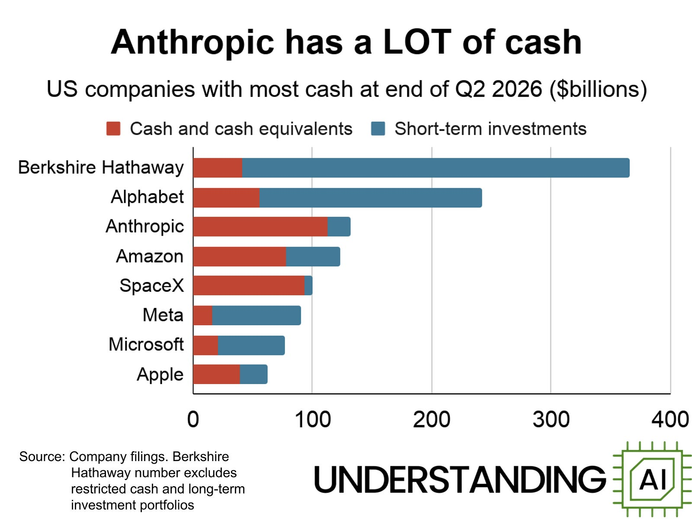

ChatGPT、Claude、Cursor、Midjourney… 主流 AI 工具的横向对比与深度评测。
11 月 2 日 Anthropic 公开 S-1。第三季度营收 168 亿美元，是去年同期的 12 倍；运营成本 175 亿，收入被吃穿，单季净亏 233 亿美元（去年同期 121 亿）。真正压在文件后面的是承诺：算力与数据中心租赁合计约 8954 亿美元，其中 4475 亿须在 2031 年前付清，只有 2138 亿可取消。账上现金 1120 亿、负债 1175 亿，现金储备在美国非银行企业里排第三，前面只有 Google 和伯克希尔。白宫科技顾问萨克斯读完说这可能是"资本主义史上最伟大的企业"；黑石却在 IPO 前改口，称其未必拿得到投资级评级。收入曲线没问题，问题是它得跑多快才追得上已经签下的产能。
看今日完整快报 →
ChatGPT · Claude · Kimi · DeepSeek · Gemini
5 款工具对比 →Midjourney · DALL·E 3 · SD · Firefly · Recraft
5 款工具对比 →Cursor · Copilot · Windsurf · Codex · Claude Code
5 款工具对比 →Runway · Pika · Kling · Vidu
4 款工具对比 →ElevenLabs · Fish Audio · CosyVoice · Azure · OpenAI
5 款工具对比 →ChatGPT vs Claude 深度横评
阅读 →Cursor、Copilot、Windsurf、Codex CLI、Claude Code 全面对比。包含 12 个 FAQ、11 种场景决策矩阵和真实编码实战案例。
ElevenLabs、Fish Audio、CosyVoice、Azure TTS、OpenAI TTS 对比。包含盲听测试、方言专项评测和 9 场景决策矩阵。